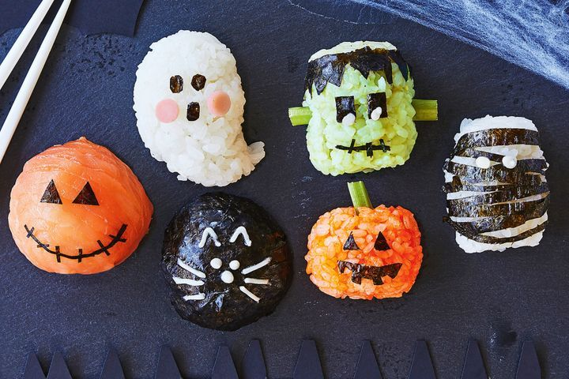

Spooky Sushi Balls

Description
Trick up a plate of ghoulish sushi bites, these are guaranteed to impress and give kids a healthy alternative to candy this Halloween
Ingredients
- 1 1/2 Cups Sushi Rice
- Smoked Salmon, to Decorate
- Ham, to Decorate
- Nori, to Decorate
- Avocado, to Decorate
- Celery, to Decorate
- Mayonnaise, to Decorate
- 2 Drops Orange Food Coloring
Steps
- Cook and cool sushi rice following packet directions, then try the ideas below.
- FRANKENSTEIN: Stir mashed avocado into the rice. Shape into a log. Decorate with nori, celery and mayonnaise.
- SCARY FACE: Shape rice into a ball. Top with smoked salmon. Decorate with nori.
- BLACK CAT: Shape rice into a ball. Cover with nori. Decorate with mayonnaise.
- JACK-O'-LANTERN: Tint rice orange with liquid food colouring. Shape into an oval. Decorate with celery and nori.
- MUMMY: Shape rice into a log. Decorate with nori and mayonnaise.
Home